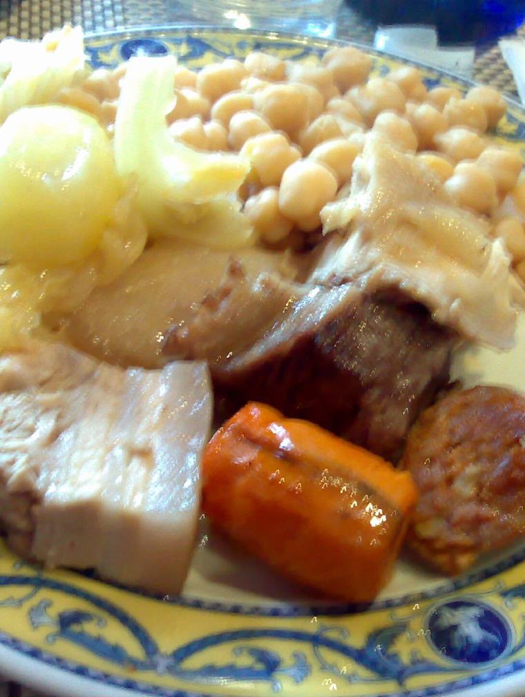

Cuisine espagnole

Cuisine espagnole
Cocido madrileño
Le pot-au-feu de Madrid, en trois services
Préparation : 45 min
Repos : 12 h
Cuisson : 4 h
Ingrédients (pour 4 personnes)
- 250 g de pois chiches secs
- 300 g de jarret de bœuf
- ¼ poule
- 100 g de lard
- 100 g de chorizo
- 100 g de morcilla à l’oignon
- 50 g de jambon serrano
- 4 os à moelle
- 1 kg de chou
- 4 pommes de terre
- 2 carottes
- 1 navet
- 1 oignon
- 100 g de vermicelles
- 2 œufs pour le relleno
- 75 g de chapelure
- 3 gousses d’ail
- 2 cuillères à soupe de persil haché
- huile d’olive, sel
Quantités adaptées. Les temps de cuisson ne sont pas recalculés.
- La veille, tremper les pois chiches dans l’eau tiède un peu salée.
- Couvrir viandes, lard, os et jambon de 4 l d’eau, porter à ébullition, écumer, ajouter les pois chiches.
- À la reprise, ajouter carottes, oignon et navet. Mijoter 3 heures ou plus. Mettre les pommes de terre 20 minutes avant la fin.
- À part, cuire le chou 30 minutes et le revenir avec un tiers de l’ail. Cuire chorizo et morcilla dans une autre casserole.
- Relleno : mêler œufs, chapelure, reste d’ail, persil et sel, frire en boulettes aplaties, puis pocher dans le bouillon.
- Servir en trois fois : soupe aux vermicelles (5 minutes de cuisson), puis pois chiches et légumes, enfin les viandes.
D’après Spain.info, office espagnol du tourisme. Traduit et reformulé.